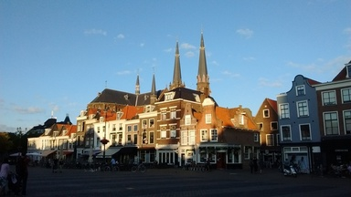

پیادهروی در دلفت-بیست و یک جولای دوهزار و پانزده

عکس را دوست دارم. میدان مرکزی دلفت پشت به هلندیساز از برجهای کلیساهای فت و فراوان دلفت. همان وسط عکس یک فستفود آشغالفروش دیگر هست به اسم سابوی. ساندویچهایی که خودشان میگویند خیلی دراز است چون از سیستم اینچ و فوت برای اندازهاش استفاده میکنند. همینجا اعلام کنم که ساندویچ زیر نیم متر دراز نیست. معمولی است. یک لایه ژامبون و یک ورق کاهو هم تا حالا کسی را سیر نکرده.
دیدگاهها
Comments powered by Disqus